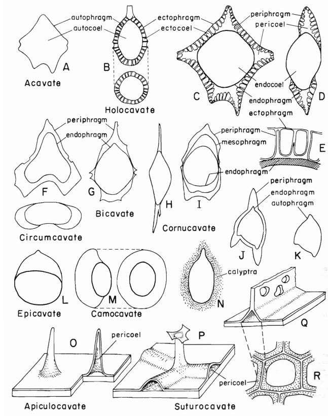
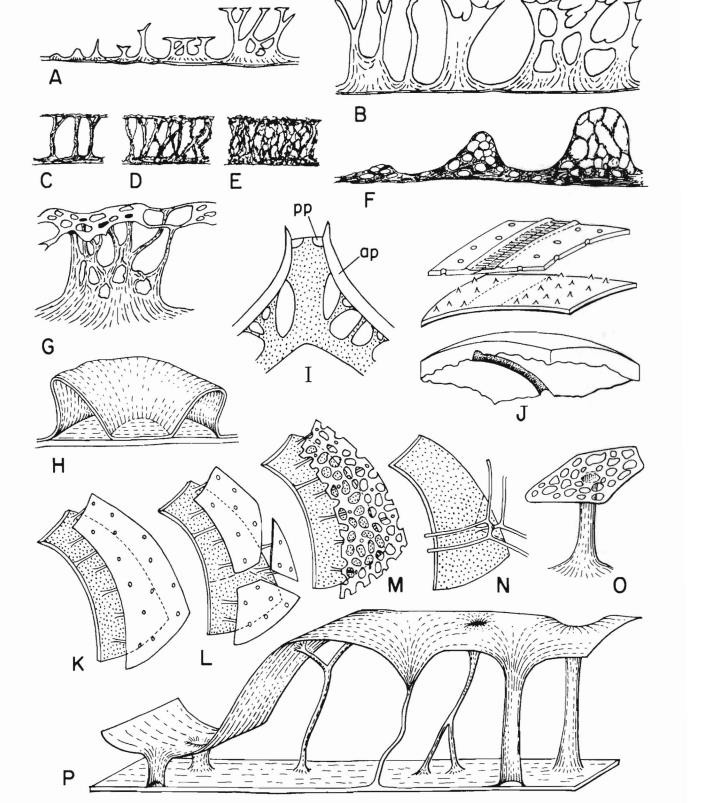
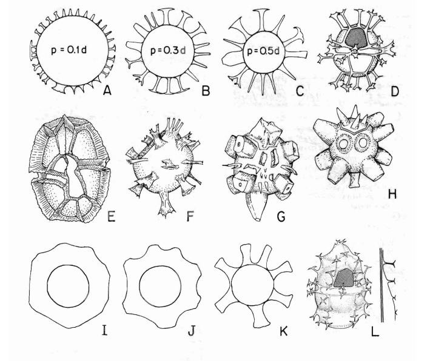
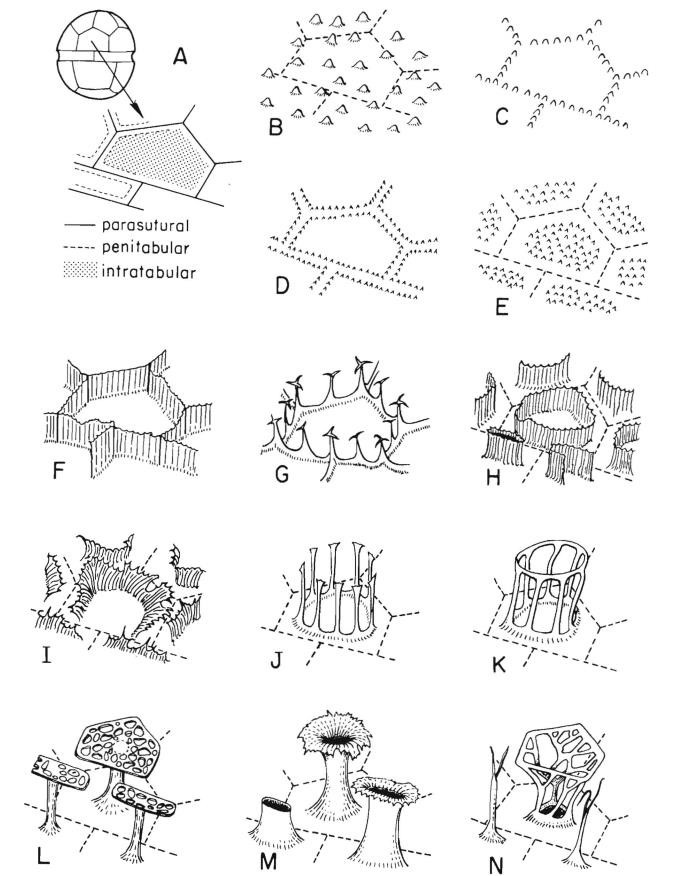

WALL STRUCTURE AND SURFACE
WALL STRUCTURE:
The wall of modern cysts consists of one, two, three layers composed mostly of biopolymer, chemically similar to the sporopollenin of spores and pollen grains in higher plants, however rarely of calcium carbonate e.g. Scrippsiella. The cyst wall can be composed of up to three or four layers (Evitt, 1985); autophragm, periphragm, mesophragm and endophragm. The color of the cyst wall is also variable, mostly transparent, light yellow, pale brown, brown or dark brown. Cysts partly composed of calcium carbonate such as Scrippsiella trochoidea are dark brown to black from live specimen. (Matsuoka, 2000).
It employs three word stems to distinguish between a wall layer (-ophragm), the cavity which it encloses (-coal), and the three-dimensional body which it forms (-cyst). To these stems may be added a variety of prefixes which identify particular wall layers: auto-, endow-, peri-, meson- and ecto-. The additional prefixes epic- and hypo- may also be used to specify the particular portion (i.e., "hemisphere") of the layer, cavity, or body under consideration. Examples: autocyst, endophragm, epipericoel. Various type of wall stratification and terms applied to them are shown here.
In cysts with the simplest wall construction, a single wall, the autophragm, surrounds an internal cavity, the autocoel; and the three-dimensional body so formed is an autocyst. Many cysts have a wall composed of only one layer or more. But the junction between closely appressed layers may be nearly impossible to see clearly, whereas phenomena of light refraction (i.e. Becke lines) may create the appearance of layering where none exists.
Endophragm and periphragm are respectively, the inner and outer layers in many cysts with definitely two-layered walls. These layers may be in close contact or separated by a pericoel.
An ectophragm a layer of highly varied character, is present external to either a periphragm or autophargm of some cysts. It may consist of a membrane that is continuous, perforate or interrupted along parasutures, or it may be reduced in varying measure to rod-like or ribbon-like.
A further type of wall layer, the mesophragm, a thin layer lying between two other layers easily identified as periphragm and endophragm by comparison with other species.
It is useful to focus attention on the cavation of the wall (Stover and Evitt, 1978); that is, the form and distribution of the major cavities between layers, especially the pericoel. Thus, the terms, epicavate, hypocavate, may be used to describe cysts in which one cavity is confined to either the epicyst or the hypocyst, or two cavities occur, one at each pole.
In holocavate cysts an encircling cavity is evident in all direections of view, and supporting structures of some kind extend between the wall layers. By contrast, in circumcavate cysts, the cavity is continuous around the margin of the cyst as seen in dorsoventral view as seen in dorsoventral view. Camocavate cysts have the wall; layers in contact or close together on one surface. Cysts in which cavities occur only at or near the bases of horns or equivalent structures are cornucavate; they are suturocavate if the cavities are restricted to the lines of parasutures and apiculocavate if restricted to the bases of spines or processes. Acavate cysts are without cavities.
A final kind of enveloping material, although hardly to be considered a part of the wall, is a calyptra. Looking like a gelatinous mass, irregular in thickness and closely surrounding the cyst, and are associated especially with certain pyriform to fusiform cysts of Late Jurassic and Early Cretaceous age.
SURFACE:
The inner surfaces of autophragm, endophragm and periphragm are usually smooth, and the outer surface of the endophragm is either smooth or has features of only low to moderate relief. In contrast, the outer surface of an autophragm or periphragm may be extended into a great variety of projecting structures.
Most projections from the autophragm or periphragm fall into two general categories, and those which rise from a linear base. The former, depending upon their height include granules, verrucae, spinules, spines and a host of structures collectively, termed processes. Similarly, the linear elements grade from ridges or low folds into higher, fencelike septa, which have also bee termed ledges, crests or lists.
For cysts having projections in the lower part of the range (between about one to three-tenths of the main body diameter), the term proximochorate has been used, chorate cysts may be skolochorate, with processes, and murochorate, with septa.
 DISTRIBUTION OF RELIEF:
The local elements of wall structure, whatever may be their exact form and whether or not they involve surficial or internal detail, may be distributed in different ways.
A distribution which gives no indication of paratabulation is termed non-tabular and its elements may be uniformly or irregularly spaced. In contrast, a tabular distribution does indicate paratabulation and is said to be parasutural when it emphasizes the boundaries between paraplates or intratabular when it accentuates the central portions of paraplates more or less remote from these boundaries.
If the basal diameter of an intratabular feature is imagined to increase until it encloses most of the are of the paraplate, then the special case of a penitabular feature results. Penitabular features on adjacent paraplates may approximately parallel the paraplate boundaries. In principle, they form closed lines around each paraplate. When they run very close to the parasuture, the pairs of lines from adjacent paraplates may give the appearance of a single parasutural feature.
The simplest and most apparent parasutural features are ridges or septa which mark off paraplates much as thecal sutures separate thecal plates. It was responsible not only for the first identification of dinoflagellates in the fossil record, but also for the early acceptance of their remains as fossilzed thecae.
Parasutural projections on a single cyst may be uniform or varied design. Projections localized at the angles of paraplates are termed gonal, while those along paraplate sides between triple junctions are intergonal.
The zones of incremental plate growth intercalated along the thecal sutures in many modern species are clearly represented in some fossils by what have been called parasutural bands. Like their thecal counterparts, these may even be transversely striate and vary in width from one part of the cyst to another.
Both external relief features and features within the wall may be affected. In external features may include elaborate processes or septa, often intricately expanded or interconnected. Internal features may include the empty pericoel or connecting structures of various types extending between inner and outer walls. Central reduction and marginal prominence of features is usually greater for the ventral surface than for the dorsal one. (Hamza, 2013).
BIBLIOGRAPHY:
- Hamza, R. A. R. (2013). Dr. Ali Soliman (Doctoral dissertation, Faculty of Science Geology Department Dinoflagellate cysts: principals Essay submitted to the Geology Department faculty of science, Tanta university).
- Matsuoka, K., & Fukuyo, Y. A. S. U. W. O. (2000). Technical guide for modern dinoflagellate cyst study. WESTPAC-HAB, Japan Society for the Promotion of Science, Tokyo, Japan, 47. pp. 22.